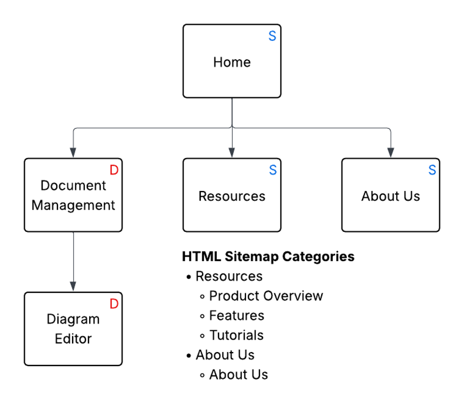

This section displays artifacts relating to the user interface and experience of the website.

An “S” means the page is static, and an “D” means the page is dynamic
Sitemaps are important UX artifacts for a website because they determine the structure of a website. Planning the structure of a website is necessary, since users have expectations about how to navigate a website. So, planning and visualizing the website’s navigation enables me to see how different pages fit together and organize them properly.